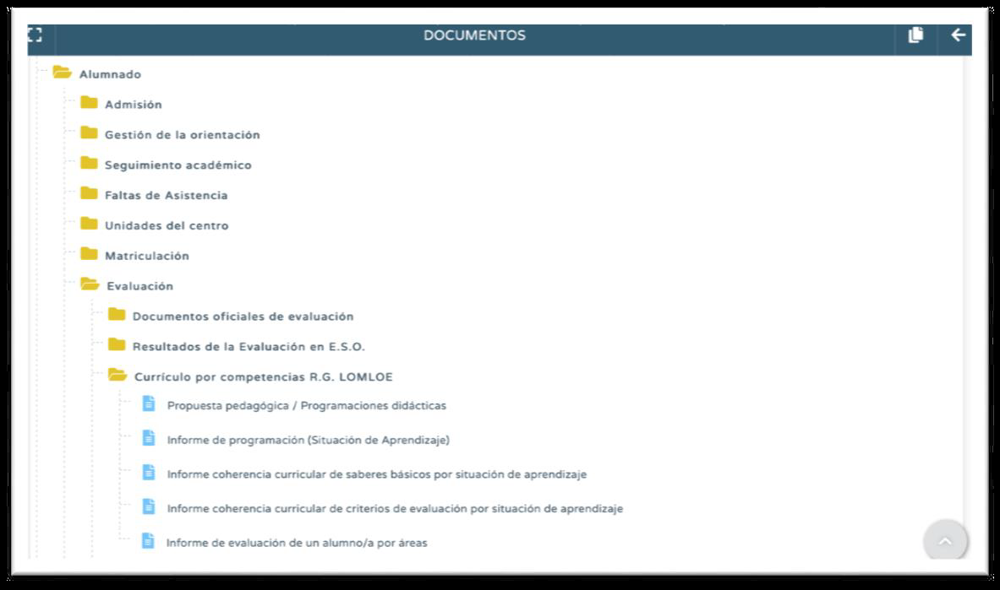
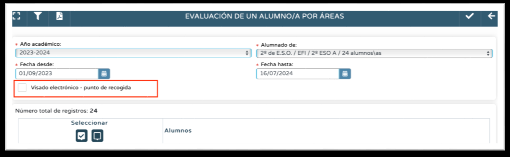
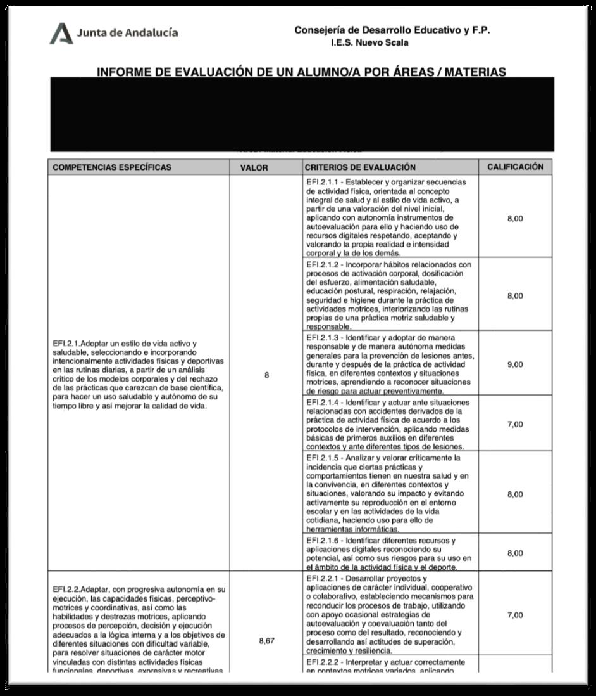
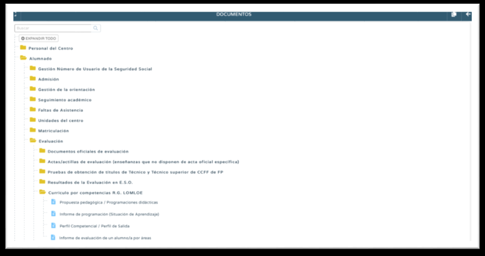
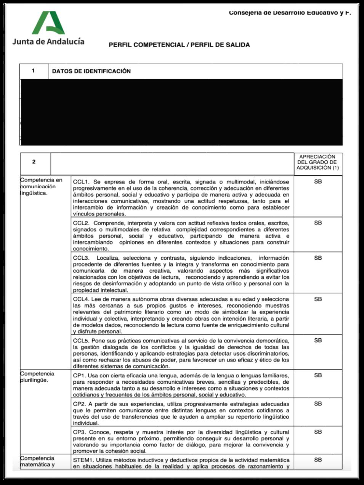

6.2. En relación al módulo de Competencias.
Los documentos que se pueden extraer en relación al trabajo con el módulo Currículo por Competencias R.G. LOMLOE son distintos en función del perfil con el que se acceda a Séneca (Vídeo de apoyo):

a. Perfil Profesorado:- Propuesta Pedagógica / Programaciones Didácticas. Se puede extraer un pdf de todas y cada una de las programaciones didácticas alojadas en Séneca, si se tiene permiso decoordinador, o solo de aquellas de las que se tiene permiso de elaborador. Sin estos permisos no es posible extraer las programaciones en pd
- Informe de programación (Situación de Aprendizaje). Se puede extraer un pdf de los apartados de las Situaciones de Aprendizaje de las que se es o propietario o participante.
- Informe de coherencia curricular de saberes básicos por situaciones de aprendizaje. Se trata de una tabla de doble entrada en la que se marcan los saberes básicos trabajados en cada una de las Situaciones de Aprendizaje alojadas en Séneca de las que se es o propietario o participante. Recopila el número de saberes trabajados en cada Situación y el número de veces que se ha trabajado cada saber a lo largo de todas las Situaciones. De ahí que se denomine Informe de Coherencia, pues el trabajo de saberes a lo largo del curso ha de ser más o menos balanceado.
- Informe de coherencia curricular de criterios de evaluación por situaciones de aprendizaje. Se trata de una tabla de doble entrada en la que se marcan los criterios evaluados en cada una de las Situaciones de Aprendizaje alojadas en Séneca de las que se es o propietario o participante. Recopila el número de criterios evaluados en cada Situación y el número de veces que se ha evaluado cada criterio a lo largo de todas las Situaciones. De ahí que se denomine Informe de Coherencia, pues la evaluación criterial a lo largo del curso ha de ser más o menos balanceada.
- Informe de evaluación de un alumno/a por áreas. Es un documento muy interesante, pues da respuesta a la exigencia normativa (en Secundaria) de entregar, al alumnado con la materia suspensa, un informe con las competencias específicas y criterios de evaluación no superados. En este informe se puede extraer, para el alumnado seleccionado, la recopilación de las calificaciones de todas las competencias específicas y criterios de evaluación de la materia que se imparte. Si al generarlo marcamos Visado electrónico – Punto de Recogida, tenemos la posibilidad de envío al Punto de Recogida de Pasen, con lo cual podríamos generarlo de forma masiva para todo el alumnado (incluido el que tiene la materia aprobada) y enviarlo de forma muy operativa al Punto de Recogida de Pasen. No obstante, como veremos más adelante, para el envío al Punto, es mejor que sea generado por el perfil Dirección para todas las áreas-materias-ámbitos; de esta forma se mandaría al Punto un único documento, y no uno distinto por cada profesor/a que las imparta.


b. Perfil Dirección:

- Propuesta Pedagógica / Programaciones Didácticas. Se puede extraer un pdf de todas y cada una de las programaciones didácticas alojadas en Séneca.
- Informe de programación (Situación de Aprendizaje). Se puede extraer un pdf de los apartados de todas las Situaciones de Aprendizaje editadas en el centro.
- Perfil competencial / Perfil de Salida. Se trata de un informe con la calificación de todos los descriptores de las competencias clave. Obviamente, de forma previa esta calificación se ha debido completar en la ruta Alumnado-Evaluación-Currículo por Competencias R.G. LOMLOE-Evaluación del alumnado-Perfil Competencial / Perfil de Salida. Como veremos más adelante esta información del Perfil Competencial también irá a alimentar otros documentos como el Consejo Orientador y el Certificado (Anexo X), de obligada entrega en Secundaria a los tutores legales. (Vídeo de apoyo)

- Informe de evaluación de un alumno/a por áreas. En este caso el documento recogerá la calificación de todas las competencias específicas y todos los criterios de todas las áreasmaterias- ámbitos. Es por ello que el documento generado envío al Punto de Recogida sea este y no uno distinto por profesor/a.
SOLO PARA FP. En el árbol Documentos de Séneca no existe un Submenú Currículo por Competencias FP, por los que los documentos que se pueden extraer en los módulos profesionales son los vistos para el uso del Cuaderno, Actividades Evaluables y Resumen del Cuaderno.